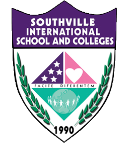

OVERVIEW
Physics, data science, math, programming, writing, and illustration - Eiji is someone who simply pursues his passion wherever it may lead. When it comes to the sciences, his interests and expertise lies in the fields of physics, mathematics, and materials science. His knowledge in programming includes mathematical modeling, programming, and data analysis using Python, MATLAB, SQL, and the like. Furthermore, he is someone who is interested in science communication and has written for The LaSallian. He is also a freelance digital illustrator in his spare time.
Education
-
De La Salle University ManilaB.Sc. in Physics with Specialization in Materials Science2019 - 2024
GPA: 3.380 -
Shekinah Christian Training Center (SCTC)
Secondary Education
2013-2019
Valedictorian | Best Thesis -

Southville International School and Colleges
(SISC)
Primary Education
2006 - 2012
Experience
-
Pythos Technologies Inc. | Intern | Python software project, debugging code | September 2023 - November 2023
Summary of activities
-
Developed an image processing program primarily with OpenCV.
-
Implemented a basic machine learning system for said program using PyTorch
-
Conducted weekly project status reports and wrote up a final technical paper
Performed debugging on other programs
-
-
Goshen Grains Trading | Data analyst | 2023 - present
-
DLSU Laboratory | Academic | Thesis and course projects
Summary of activities
Vacuum infiltration systems
Hazardous chemical handling
Spectroscopy
Mechanical testing devices
Polymer handling
General laboratory documentation
-
The LaSallian | Vanguard Staffer | 2020 - 2024
Summary of activities
Live coverage of events
-
Researching topics, experts, and conducting interviews
-
Writing articles related to science and technology
-
Illustration | Freelance | 2020 - Present
Summary of activities
-
Digital illustration including concept art, character design, fan art, and book art
Video editing of painting timelapse
Social media management of art pages
-
Skills
General research
Academic research
Technical research
Financial research
Mathematics
Physics
Semiconductors
Problem solving
Academic writing
Technical writing
Python programming
Python for data analysis
MATLAB programming
MATLAB for data analysis
SQL
-
Front-end webdev
HTML
CSS
Javascript
UI design
Google analytics
Data analysis
Data reporting and visualization
Statistics
-
Microsoft Office
MS Excel
MS Word
MS Powerpoint
MS Teams
MS Outlook
-
Computer Literacy
Web literacy
Software literacy
Servers and networks literacy
-
Laboratory
Physics laboratory
Chemistry/Materials Science laboratory
Laboratory safety and etiquette
Vacuum systems
Mechanical testing systems
Spectroscopy
Photonics
Polymers
Journalism and media
Storyboard writing
Article writing
Science communication
Lead generation
Editing and proofreading
Interviewing and transcribing
Public speaking
Communication
Social media management
Digital illustration
Photoshop
Achievements
-
Department of Science and Technology Merit Scholar 2019
Consistent 2nd dean's lister
-
Bachelor's of Science in Physics with Specialization in Materials Science
Personal Information
Age: 24 years old
Birthdate: February 6, 2000
Civil status: Single
Citizenship: Filipino